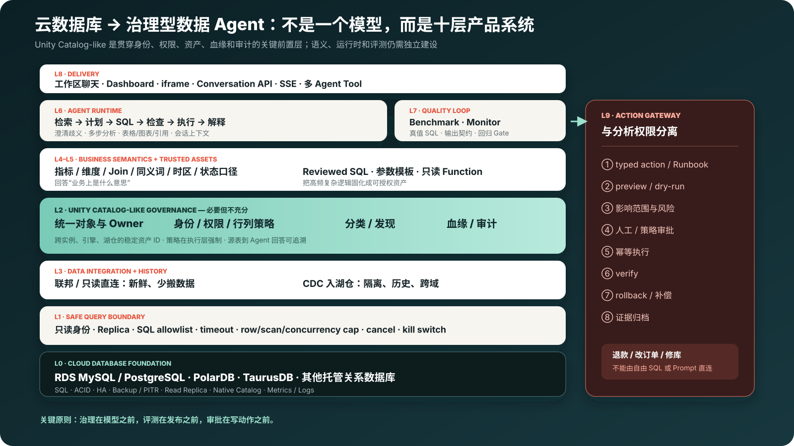
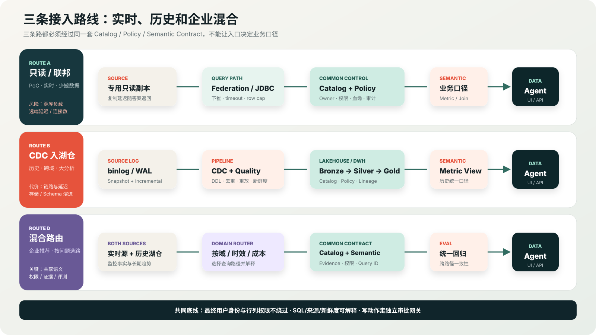

可靠事实底座
SQL、事务、索引、备份、HA、只读节点、系统目录、指标和慢 SQL。
CLOUD DATABASE → GOVERNED DATA AGENT
RDS MySQL / PostgreSQL、PolarDB、TaurusDB 已经有可靠数据库底座；真正缺口是统一治理、业务语义、安全执行、Agent Runtime、评测运营和动作审批。
先回答你的问题
要先补平台多年前就形成的目录、权限、数据工程和 SQL 执行基础，再叠加近年的语义、Agent 和评测能力。
SQL、事务、索引、备份、HA、只读节点、系统目录、指标和慢 SQL。
跨源 Catalog、统一身份、行列策略、Owner、分类、血缘、审计、CDC 与分析计算。
权威视图、指标、维度、Join 图、同义词、状态/时间/币种口径和可信 SQL。
规划、NL2SQL、安全执行、引用、Benchmark、Monitor、API、SLA 和反馈闭环。
从通用架构到具体云产品
单独专题以合成客户事故串起 RDS、DAS、DRS、DataArts、智能体平台、IAM 与 APIG，并明确哪些复用、哪些打通、哪些必须新建。
客服联查订单/退款/工单，DBA 联查慢 SQL/变更/告警；目标五分钟形成证据包。
Policy Adapter、Semantic Contract、Query Gateway、双方言包与 Eval/Monitor 五个新增服务。
价值合同 → 安全路径 → 治理 → 语义 → Agent → 伙伴试点；分析面始终只读。
十层架构
红色动作网关与只读分析面故意分开：能诊断并不等于能直接退款、改订单或修库。

为什么需要 Unity Catalog-like
information_schema / pg_catalog 是重要采集源，但主要是单实例技术元数据，不是跨源企业治理和业务语义产品。
跨账号、区域、实例和引擎的稳定资产 ID、Owner、版本与生命周期。
浏览器用户、代表用户、服务与 Agent 身份；策略在执行层强制。
对象权限、ABAC、行过滤和列掩码，不靠 Prompt 约束敏感数据。
权威/过期/敏感/生产标签、业务域、质量状态和数据 Owner。
源表 → CDC/联邦 → 业务指标 → Agent SQL → 答案/图表。
谁问、命中什么、生成何 SQL、策略判定、Query ID、成本与反馈。
没有统一治理，外部 Agent 很容易变成共享高权限账号 + 不可追溯 SQL。
Catalog 不会自动定义“退款总额”，也不会自动完成 NL2SQL 或判定答案正确。
语义层、可信 SQL、受控执行、Benchmark/Monitor，以及独立动作网关。
差距地图
这是数据库核心服务到完整数据 Agent 的通用判断，不等于任何一家云厂商的全产品组合缺失。
AWS 例子：Glue Data Catalog 与 Lake Formation 能补充集中元数据和湖治理，但 RDS 权限、S3 湖权限和最终查询引擎策略仍需逐路径打通；“同一家云”不等于“自动是一套治理面”。
接入路线
实时问题、历史分析和跨域问题的最佳路径不同；企业方案通常需要按时效、域和成本路由。

上线快、新鲜；适合 PoC 和实时小查询。必须限制连接、扫描、超时，并返回复制延迟。
隔离生产、保留历史、跨域 Join；适合售后和长期趋势。要处理 DDL、去重、重放和新鲜度。
实时监控走只读/监控 API，历史趋势走湖仓；共享 Catalog、指标、权限和回答证据。
内嵌 vs 外部
换成 iframe、API 或 Agent Tool 不能绕过最终用户的数据权限；外部调用方还要承担身份、会话和失败恢复。
三个落地场景
先用只读分析证明正确性和治理，再接外部业务动作。
固化指标、日期、状态、Join 和同义词；用 20–50 个真实问题验证 SQL 结果、输出契约和越权边界。
订单/退款/工单走数据查询，政策走受版本控制的检索；退款、改订单和发消息由独立 Action Tool 执行。
关联指标、慢 SQL、等待、拓扑、告警、变更和事件；参数修改、Kill、扩容与 Failover 必须 preview → approval → verify。
实施顺序
一个垂直切片只能证明连通；只有相同权限、语义、证据和错误契约跨场景复用，才能证明平台能力。
官方依据
核心结论使用官方文档校准；厂商具体版本、区域、费用和 Preview 状态仍需在目标环境实测。
录屏 + 外部讲解
D1 默认播放中文有声版，是本地架构演示，不冒充生产数据库实调；外部视频分别补治理、直连、CDC 和自然语言体验。
数据库已有能力 → Unity Catalog-like → 三条接入路线 → 内外部责任 → G0–G8；非生产实调。
建议顺序：先播 D1 建立全景，再按听众选择 01–04。外部视频证明产品定位，不证明本账号或目标云数据库已经开通。